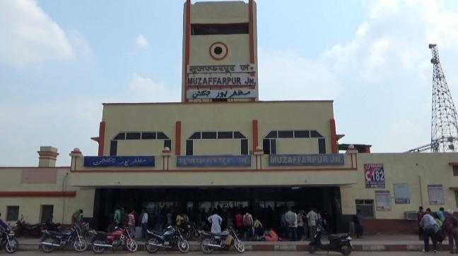
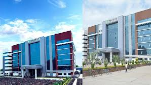
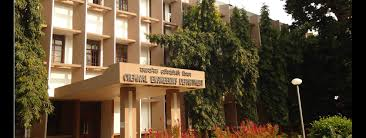

I have done my schooling from St. Xavier's School, Muzaffarpur.
I have done my schooling from St. Xavier's School, Muzaffarpur.
I am from Muzaffarpur. It is the place closest to my heart. I have spent 15 years here.

TO KNOW MORE ABOUT MUZAFFARPUR.
I have done my schooling from St. Xavier's School, Muzaffarpur.
I went to Kota to prepare for JEE.
I am currently pursuing B.Tech in Chemical Engineering at IIT KHARAGPUR.